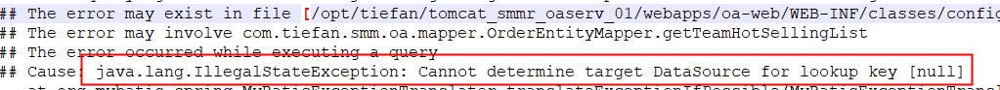

| 创建时间： | 2019/7/30 14:09 |
| 更新时间： | 2019/8/20 9:51 |
旨在记录7.30以及以后遇到的bug及解决方法指南
1.sit数据源能够获取，但在灰度上报错，显示数据源无法获取

解决方案：
1.拉大多线程运行时一次性运行的数量，旨在减少获取数据源的次数
2.在复合类中不加入针对数据源的注解，在调用mapper时，将调用的mapper封装在对应的Service中来调用
countMap = JsonUtils.toBeanTypeRef(JsonUtils.toString(response.getData()), new TypeReference<List<HashMap<String,String>>>() {});
使用tpyeReference+toBeanTypeRef,可以解决
eg:greatmart-memberHelper,found for:toBeanTypeRef
1.如果指定返回类型为Map，那么返回的一定是List，每一个结果行都会被包装成一个 map，同时map的key为列名，value为列名对应的值
2.如果使用@param（）指定参数后，在mapper文件中便不需要指定parameterType，否则会报错
该加事务的时候一定要加，否则可能不符合预期，可能在sit上也不一定能重现出来。
2.TimeStamp数据库中排序问题如果几个TimeStamp相同，那么次序并不会统一
3.连表查询时，应是小表left join 大表，效率会快很多
4.useGeneratedKeys="true" keyProperty="id"
keyColumn="id" 在mapper中添加上述参数，会将主键原本为空的对象，在通过SQL写入数据库后，在mapper中就将对象的主键设置为与数据库相同的值（不需要除了配置外其他的代码）
5.在aliyun的DML中，表字段的增加是不能带库名的，否则会无效。每次申请执行DML后都需要自己check一下是否确实执行了
1.如果是使用add和get方法复制，那么其实被复制和赋值的对象都指向内存中同一个对象，一旦有修改所有指针都会受影响
2.Array.asList()生成的list，容量是固定的，无法修改容量大小，无法使用add与delete等方法
1.有时三元运算符并不会准确短路不该有的逻辑，使用if-else判断会起到最准确的效果
compeletedFuture可以显式得知异步任务的运算结果，但是不能直接使用Executors的线程池，与list进行管理。可以使用CompletionService和ExecutorCompletionService
参数明明加值了，服务器却没有接收到传的值，怎么办？ - **在参数类型前需要加@Json注解才会收到对应的参数 **